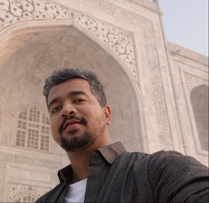

Eshwar Chandrasekharan
I am an Assistant Professor in the Siebel School of Computing and Data Science at the University of Illinois Urbana-Champaign. I study how digital environments shape human behavior and build systems to make them healthier and safer. My research spans Human‑Centered AI, AI Safety, NLP, Social Computing, and Computational Social Science. I lead the SCUBA Lab, where we build NLP and human-centered AI systems that make online spaces safer, audit how AI systems and algorithms shape what people see, and study how to foster healthier online behavior.
Highlights
- Oct 2026 🎤 Panelist at the COMPASS workshop on content moderation and platform governance at CSCW 2026, with Amy X. Zhang, Alyvia Walters, and Sanjay Kairam.
- 2026 📜 Eleven papers at EMNLP, CHI, ICWSM, and ACL.
- 2026 🏆 Best Paper nomination for LLUMI at EMNLP 2026 (to appear Oct 2026), and a Best Paper nomination at PoliSim@CHI 2026.
- Jun 2026 📑 Research cited in Spain’s Integration and Citizenship Plan (2026–2030).
- May 2026 🎉 Congrats to SCUBA Lab PhD graduates Charlotte Lambert (Assistant Teaching Professor, Purdue University), Jackie Chan (Assistant Vice President, Morgan Stanley), and Frederick Choi.
- Jul 2025 🎉 Congrats to PhD graduate Tanvi Bajpai, who joined Google as a Software Engineer.
- Jun 2025 🏆 Received the NSF CAREER Award.
- 2025 📜 Seven papers at EMNLP, CSCW, CHI, and NAACL.
- Mar 2025 📰 Quoted in The New York Times on how Reddit moderators kept federal workers informed about their jobs.